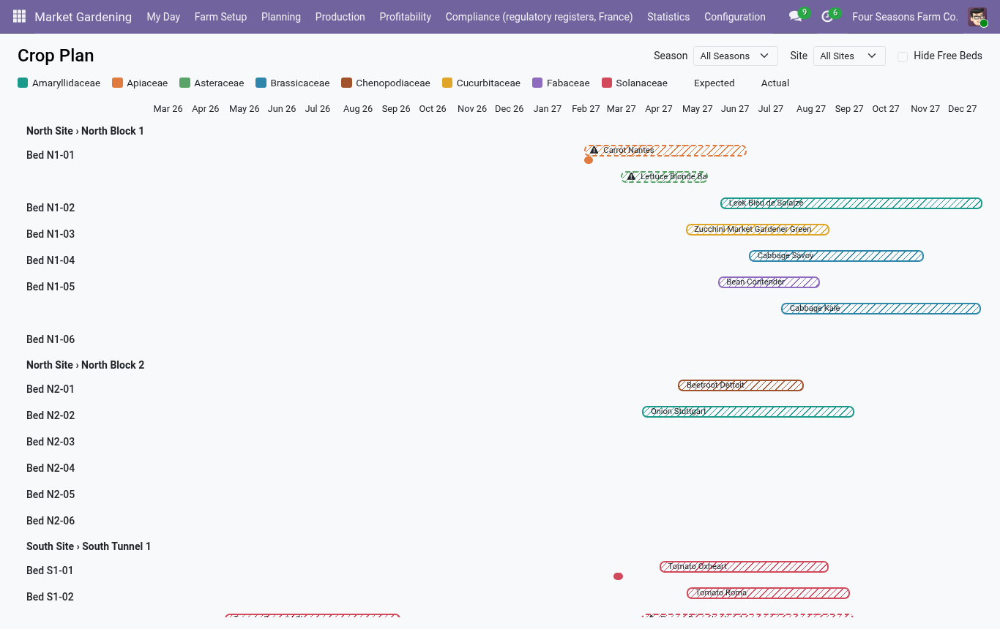
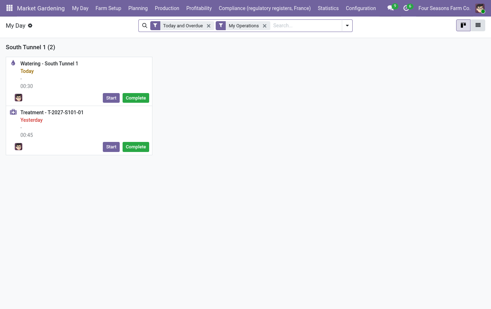
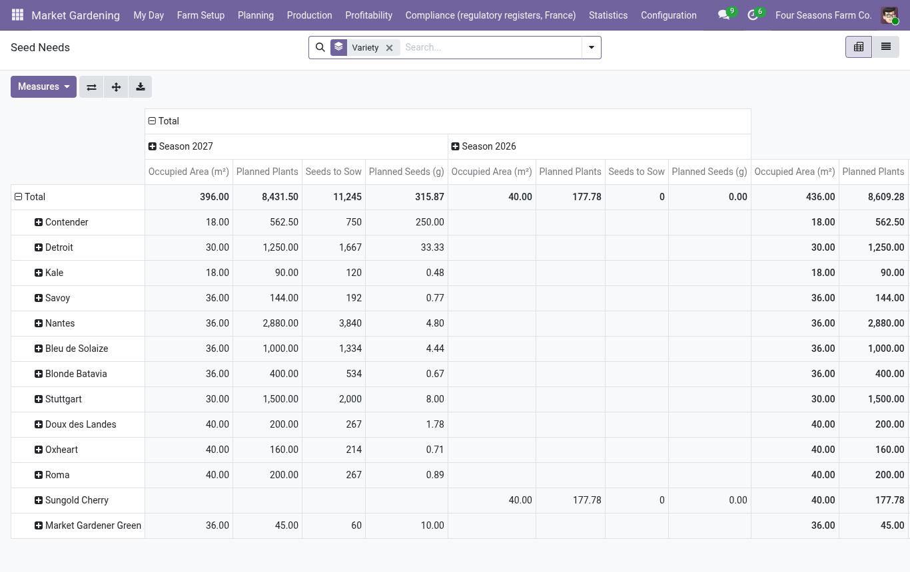
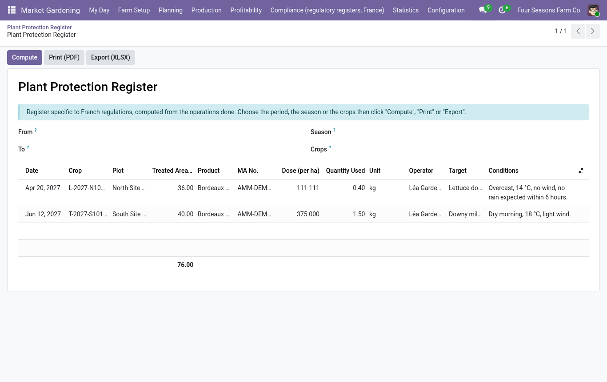

Odoo Garden
Market gardening on Odoo: plan the crops, record the work, and know what each crop earns per hour of labor and per m², from the same data as your stock, sales and payroll.
Why Odoo Garden?
Dedicated farming tools plan the season well, but stay apart from the books. Odoo Garden plans the crops natively on top of Inventory, Sales, Accounting and Employees, so the profitability of every crop is computed from real sales and real costs, without double entry.
Main features
Farm structure
- Farm, site, block (irrigation sector), bed, with areas
- QR code label per bed, opening the bed on a phone
- Multi-company ready
Catalog and planning
- Species (botanical families), varieties linked to products, crop templates
- Annual crop plan with backward planning from the target harvest date
- Batch planning wizard, overlap and rotation checks, seed needs
- Gantt view of the bed occupancy (no Enterprise dependency)
Work and labor
- Planned operations generated from the template steps
- "My Day" mobile view, timer, time per employee and cost
- Operations on a crop, beds or a whole block, split by occupied area
Stock and traceability
- Inputs consumed from stock, harvests entering stock with a crop lot
- Losses and scraps, loss rate
- From the seed lot to the customer lot, in both directions
Profitability
- Revenue per crop by delivery lot or pro rata of the monthly harvests
- Margin per crop, bed, species, hour and m², expected versus actual
- Dashboard and pivot / graph reports
Regulatory registers (France)
- Plant protection register (PDF and XLSX), fertilization register, organic certification export
- Pre-harvest interval check with a manager waiver
- Specific to French regulations: can be switched off in the settings for other markets
Screenshots






Optional bridges
Two small companion modules are installed automatically when the matching Odoo app is present:
| Module | Installed with | What it adds |
|---|---|---|
odoo_garden_purchase | Purchase | Creates draft requests for quotation for the seeds and plants of a season, one per supplier. |
odoo_garden_pos | Point of Sale | Includes market sales rung up in the Point of Sale in the revenue and profitability of the crops. |
Compatibility and languages
- Odoo 19, Community and Enterprise. No dependency on Enterprise-only modules.
- Depends on Inventory, Sales, Accounting, Employees and Discuss.
- No external resource is loaded: everything works offline, with native Odoo views and OWL.
- Source language: English. Translations: French, Spanish, German, Dutch, Italian, Brazilian Portuguese (machine translations, to be reviewed by native speakers).
Roles
- Worker: sees the crop plan, records and times their operations, harvests and losses. No access to costs.
- Crop Manager: manages the catalog, templates, seasons, crops and all operations.
- Manager: profitability, configuration and pre-harvest interval waivers.
Support
Contact the publisher through the Odoo Apps Store page of the module.